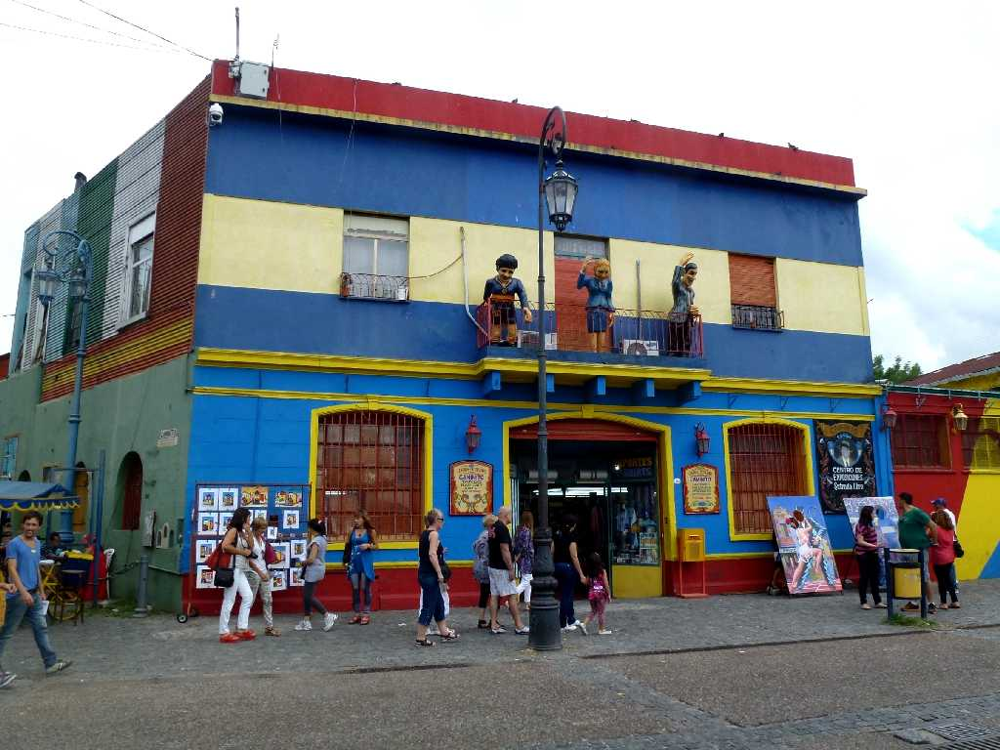
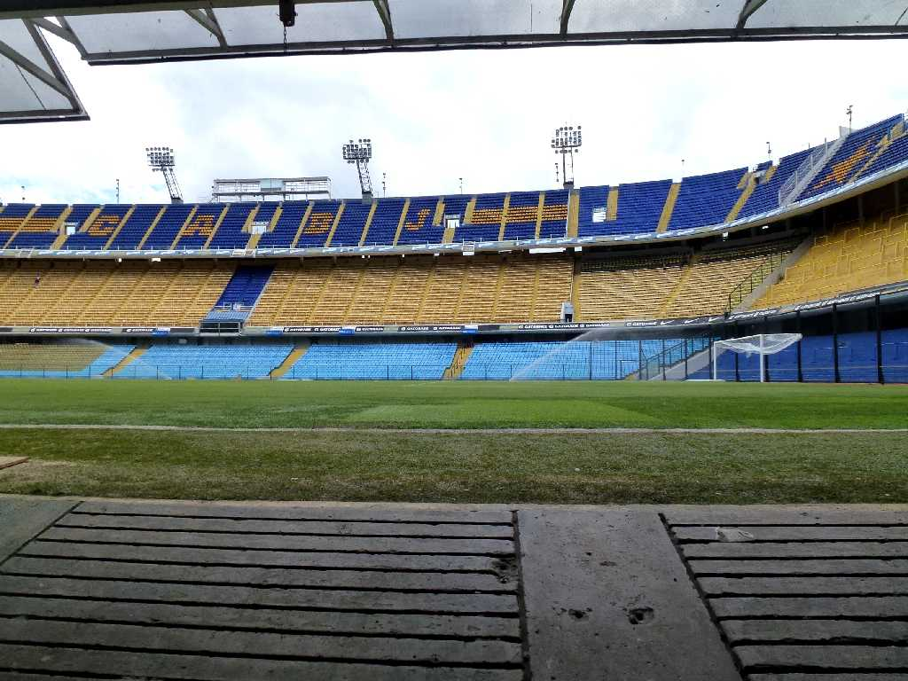
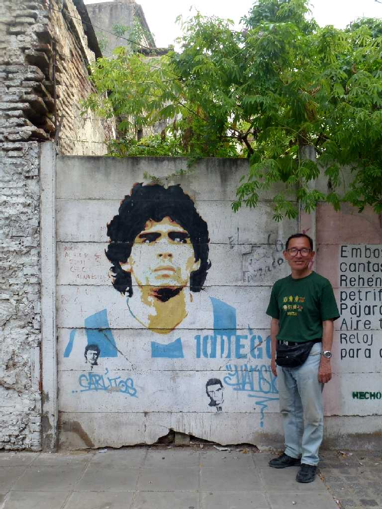
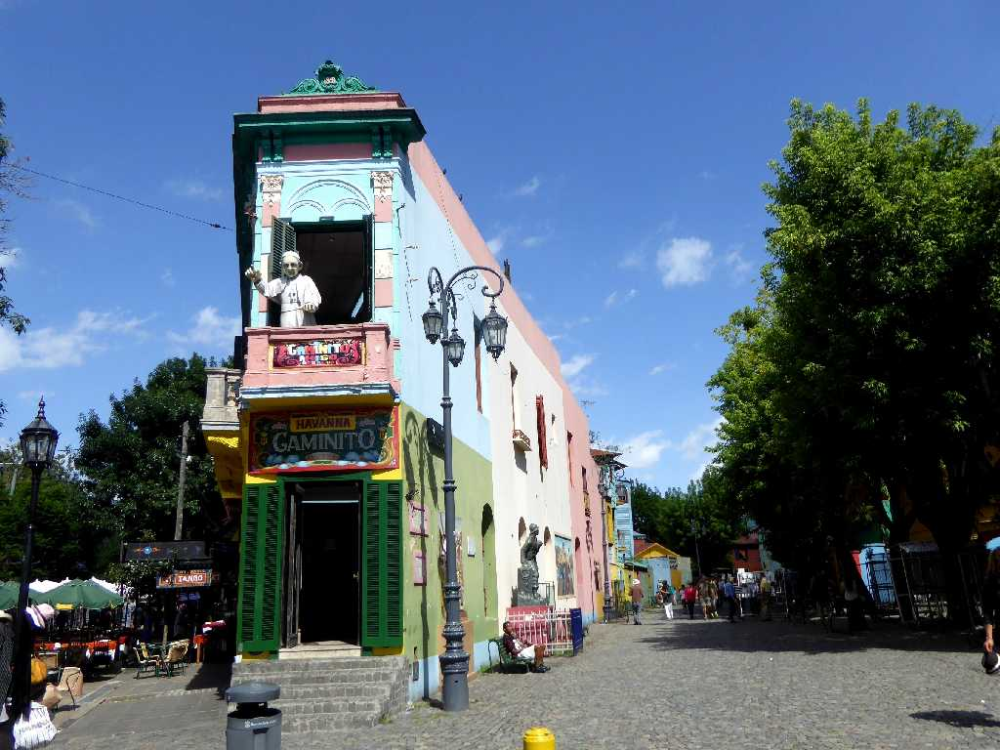
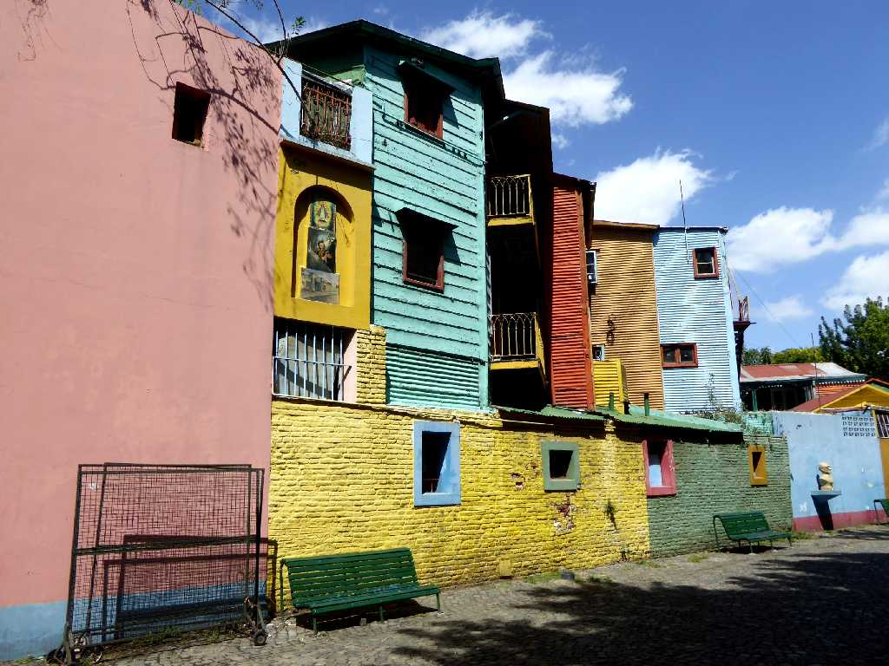
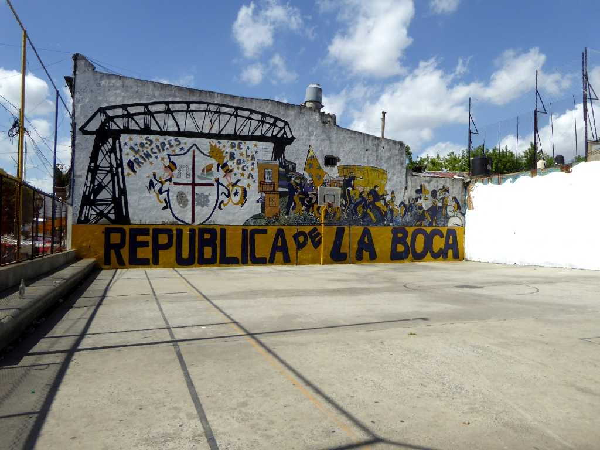
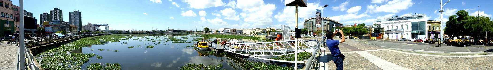
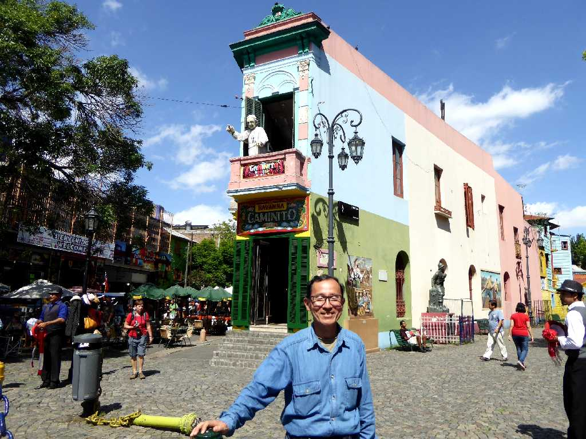

La Boca Buenos Aires

La Bombonera La Boca Buenos Aires

February 22 2014 Maradona La Boca Buenos Aires

Caminito La Boca
地球一周の船旅でパタゴニア縦断の旅以来２年ぶりの再訪問

Calle Caminito La Boca

Republica La Boca

Vuelta de Rocha La Boca

February 14 2016 La Boca Buenos Aires